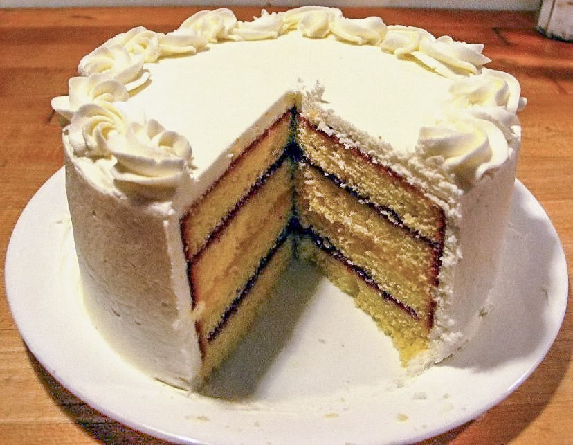

Magnolia Cake

The most delicious cake you will ever eat!
I have always had a love for baking as well as sharing
those recipes with friends. This cake was a staple at our
home anytime we had company. The frosting is so delicious. One bite
of this cake and you will be thanking me later.
Cake Ingredients
1 Box White Chocolate Instant Pudding Mix
2/3 Cup Egg Whites (at room temperature)
2 Ounces Bakers White Chocolate (melted)
Steps
Preheat oven to 350 degrees.
Mix cake mix and pudding mix.
Add water, oil and egg whites and beat slowly.
Add melted chocolate to mixture and beat at medium speed.
Pour batter into 2 greased/floured 9 inch round pans.
Bake for 30 minutes.
Icing Ingredients
1 Stick Butter (softened)
4 Cups Confectioners Sugar
6 Tablespoons Heavy Cream
4 Squares Baker's White Chocolate (melted)
Steps
With mixer beat sugar, cream and melted chocolate.
Once you reach an icing consistency, spread on each layer of cake.